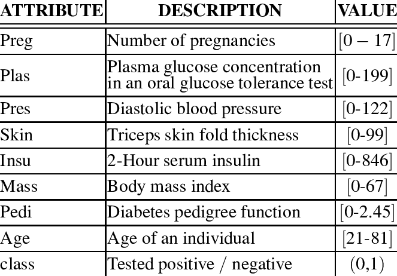

The objective of the project is to diagnostically predict whether or not a patient has diabetes, based on certain diagnostic measurements including Body mass index, blood pressure, age, insulin level, number of pregnancies etc.
Dataset: Pima Indians Diabetes Database(768 training records) from Kaggle . All patients here are females at least 21 years old of Pima Indian heritage.
Hardware used: GPU
Approach used: ANN model using pytorch with two hidden layers, one output layer and relu activation function.